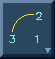
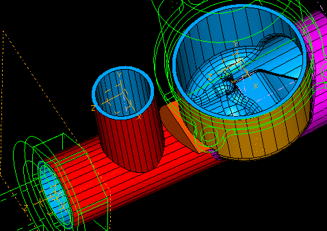

| Next Page | Previous Page | First Page |

SIP on the XZ plane of the new Coordinate System.

Create Arc as before (don'r forget to focus on the coordinate system)

Create the line as before.

Constrain the line as before.

Modify the radius to R 15mm


Extrude the section until it hits the part.
Extrude, pick section, Flip direction, Protrude, Until Next, <OK>

Hit the Update twice to completely update the part, ie to now include the Reflect and Shell.
"Unfreeze the Reflect and Shell to include the new port."

Modify the Shell feature parameters to add the top face of the new boss to be deleted.
Modify, pick the shell feature, Feature Parameters, Delete, pick the top surface, <Done>, <OK>
Update the part to include the new changes.
"Modify our hollow out (or shell) feature to remove the open face of the new port."